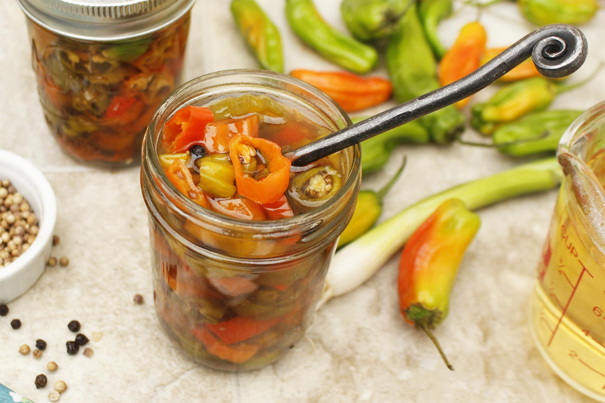

Pickled Shishito Peppers

It's pickling time! Here is a simple pickled shishito pepper recipe that can be used with other peppers and onions. Let's play spice roulette with these peppers and see who gets pieces from that 1 in 10 hot pepper. I've had teh pleasure of getting 3 in a row while creating this recipe.
Ingredients
- 6 oz. shishito peppers, slicked into 1/2" rings
- 2 cups red wine vinegar
- 1 cup water
- 2 tsp peppercorns
- 5 garlic cloves
- 2 tbsp granulated sugar
- 8 tsp salt
Steps
- Bring the vinegar, water, garlic, peppercorns, salt and sugar to a boil in a small sauce pan over high heat
- Lower the heat to medium and boil for about 5 minutes
- Pour the brine over the peppers in a pint size glass jar and let it cool to room temperature
- Once cooled, keep in the fridge overnight
- They are ready in about 24 hours